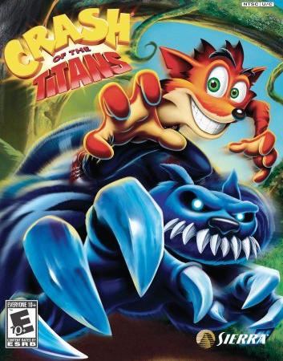

Crash Of The Titans
Em "Crash of the Titans", Crash Bandicoot deve resgatar sua irmã Coco e salvar a Ilha Wumpa das garras do Dr. Neo Cortex e seu exército de titãs mutantes, criados com a misteriosa substância Mojo.
O jogo introduz a habilidade de Crash de controlar monstros, permitindo que ele monte e utilize seus poderes para combater os inimigos e avançar na história.

Descrição
O jogo começa com Crash, Coco, Crunch e Aku Aku vivendo em paz na Ilha Wumpa. De repente, o Dr. Neo Cortex chega com seu dirigível, aprisionando Aku Aku e Coco, além de congelar Crunch.
Crash, com a ajuda de um dispositivo criado por Coco, consegue libertar Aku Aku e inicia uma aventura para salvar Coco e impedir os planos de Cortex.
Cortex planeja usar uma substância chamada "Mojo" para criar um exército de Titãs, mutantes leais a ele, e Crash precisa usar a técnica de "Jacking" para derrotá-los e tomar o controle deles.